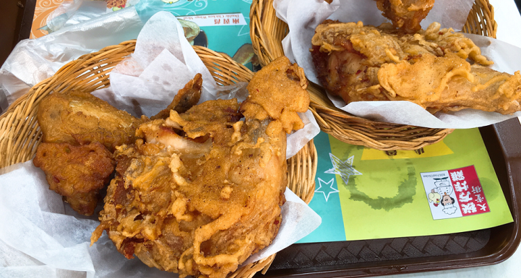

當地美食
#大堂炸雞#
如果你喜歡吃炸雞，大堂炸雞可能是你能遇到的最好吃的炸雞。剛出爐的炸雞色澤焦黃，引人食慾。如果小店人不多，你大可以慢慢品味。炸雞肉質鮮嫩香滑，口感甜酸微辣，人均消費30澳門元左右。
小店在新馬路附近，沿著議事亭前地噴水池旁的小斜坡直上約100步可到，小店位於坡頂位置。

圖：大堂炸雞
地址：澳門新馬路大堂街14號A-B地下
#瑪嘉烈咖啡#
曾是夫妻的瑪嘉烈與安德魯造就了澳門的葡撻傳說，這裡除了最出名的葡撻，奶茶跟卡布奇諾咖啡都很好喝。這家店不太好找，從葡京往新馬路方向走過一間葡語學校，過了紅綠燈右拐走五六米會看到一個廣告牌，再往內巷走就找到了。雖然十分隱蔽，但一點也不影響生意紅火，葡撻一隻6澳門元。

圖：瑪嘉烈咖啡
地址：澳門本島馬統領街金來大廈17B地舖
#盛記白粥#
從議事亭前地過馬路，過民政局後往右走，第一個巷口進去30米左右即可到達。 “盛記白粥”專營粵式點心，以清淡的白粥為招牌，一碗6澳門元。白粥很香滑，由精選的若干種香米混合磨碎，加入腐皮後慢火熬成。若佐以小店特製的油條，就是一份相當不錯的早餐。

圖：盛記白粥
地址：澳門雅廉訪大馬路77號輝時大廈
#帝鈞碳烤胡椒餅#
與澳門小吃相遇有時只是一個偶然，帝鈞碳烤胡椒餅便是其中之一。經營胡椒餅的小店在新馬路大砲台街1C號，逛街時七拐八拐就有可能撞上它。帝鈞碳烤胡椒餅源自台灣，現包現烤。據說肉餡用的是前腿豬肉，配以馬來西亞胡椒，醃製48小時以上方可使用，酥皮則是加入獨創的油酥，以保證餅質皮脆肉嫩。
圖：帝鈞碳烤胡椒餅
地址：澳門新馬路大砲台街1C號
#禮記冰淇淋#
60多年的冰淇淋老店，位於荷蘭園大馬路荷蘭花園大廈旁，裝潢十分懷舊，以椰子、香芋、香芒味冰淇淋和紅豆雪條聞名。已經少見的冰淇淋三明治和雪磚也可在店內嚐到，常有懷舊人士專程而來。搭2號巴士或99A號巴士到塔石/衛生中心站即可到達。
圖：禮記冰淇淋
地址：澳門半島荷蘭園大馬路12-12A號
#潘威記蛋糕#
一對恩愛的老夫婦和一個有理想的兒子經營的“潘威記”專賣芝士蛋糕。小店位於澳門年輕人聚集的小巷裡——天神巷41號。招牌芒果cheese cake、巧克力泡芺口感極好。據說這裡的用料都是店主精挑細選並從國外進口的，而蛋糕則出自其兒子的一門好手藝。
圖：潘威記蛋糕
地址：澳門半島天神巷41號（聖約瑟中學旁）
#大利來豬扒包#
氹仔官也街的“大利來豬排包”聲名遠揚，豬排包是用老式柴爐烘製而成。為了保證質量，店家每天下午3時開始限量銷售。豬扒帶骨口感一流，分量十足，肉質鮮美爽甜，肉味濃而不油膩，配以用炭爐烤製面飽，外脆內軟，令人回味無窮。
圖：大利來豬排包
地址：澳門告利雅施利華街35號
#葡國雞#
澳門最具代表的菜之一，葡國人從非洲及印度食品中學到將雞塊、土豆塊混以椰漿和咖哩製成的葡汁，撒上少許葡腸、黑橄欖，放入烤箱中焗烤而成的美食。雞肉鮮嫩可口，香味濃郁，一般與佐餐酒配合風味更佳
圖：葡國雞
覓食好去處
#官也街#
官也街（Rua da Cunha） 在氹仔南部市區中心，由施督憲正街與告利雅施利華街之間起，至消防局前地。這條只有約115米長，5米寬的小街，是澳門著名的食街之一。
街內中西食肆林立（特別是以葡國餐招徠食客的餐廳），還有數間售賣當地特產（雞仔餅，咸切酥等餅食以及蠔油，蝦醬等）的“手信”（禮物）店。它們吸引了不少游客和澳門市區的居民，平時行人眾多，假日更加擁擠。海島市市政廳於1983年5月1日把它劃為全澳第一們行人專用區。
官也街是澳門的老牌美食街，在這條街及附近有很多葡國菜館、手信店。在氹仔官也街，街道兩邊密密麻麻開著數十家“手信”商店，擺滿了當地特色食品，從盒裝的杏仁餅，散裝的牛肉乾、蛋捲、薑糖，到放在玻璃罐裡按兩稱的話梅、檸檬、八珍果等應有盡有。
每當遊客經過時，都會被店家熱情相邀品嚐，不吃都不行。通常一條街走下來，肚子也飽了，不必再吃正餐。
圖：官也街
地址：澳門氹仔南部市區中心
#沙度娜餅屋#
大利來馬路對面有家SERRDURA（沙度娜餅屋），店面毫不起眼，卻是一家甜品連鎖店，且專營一種點心——木糠布丁。在澳門，布丁的地位與蛋撻一樣重要。
SERRDURA是葡萄牙文，是木糠布丁的意思，主要由芝士、煉奶和餅乾碎混攪、冷凍而成。
這家店採用的是瑞士低脂芝士，比普通的更滑、奶味更香濃。除原味木糠布丁外，小店還研製出朱古力、碎果仁、石板街、榴蓮、綠茶、碳燒咖啡、芒果、曲奇等8種不同口味，吃的時候上面撒上一層餅屑以增強口感，看上去很像木屑，“木糠”因而得名。如果中秋來，你還能吃到木糠布丁月餅。
圖：沙度娜餅屋
地址：澳門氹仔舊城區巴波沙總督街大利來對面
#誠昌飯店#
位於氹仔的誠昌飯店，以水蟹粥出名。蟹黃與粥水融於一體，泛起一層金黃，誘人奪目。雖標榜水蟹粥，卻取了膏蟹、肉蟹和水蟹三種蟹的精華部分，熬出馳名水蟹粥的美味。
電話： +853-28825323
營業時間： 週一至週日12：00-23：30
圖：誠昌飯店水蟹粥
地址： 澳門氹仔舊城區官也街28-30號
#安德魯蛋撻店#
位於路環島的安德魯蛋撻店，店主安德魯是意大利人，曾歷任總督廚房的麵點師。澳門回歸後，他留在島上發揮一技之長，開了這家蛋撻店。小店每天上午11時開門，下午6時打烊，蛋撻供不應求，美味蜚聲海內外。
圖：安德魯葡式蛋撻
地址：澳門威尼斯人大運河購物中心3樓臉譜街870號舖
#小飛象葡國餐#
葡式西餐廳在澳門並不少見，不過真正經典的卻是難得，小飛象葡國餐廳就是其中一家，在當地極有名氣。餐廳有著顯眼的招牌，可愛的小飛象標誌特別討人喜歡。餐廳內部寬敞，裝潢簡潔又不失溫馨，青花瓷磚的牆壁又顯出文藝清新範兒。混合乳香的葡國雞是必點菜品，慕名而來的食客絡繹不絕。
電話： +853-28827888
營業時間： 週一至週日11：45-23：00，全年無休。
圖：小飛象葡國餐
地址：澳門氹仔地堡街喜來登廣場地下A鋪連一樓全層（不是喜來登酒店，在舊城區官也街附近）
#義順牛奶公司#
提到義順牛奶公司，自然會想到他家的雙皮奶，可以說澳門最有名氣的甜品店。據說，“義順牛奶公司”並非源自香港，而是來自澳門。難得的是，這家以其一流的奶製品，成功征服了對甜品異常喜愛和挑剔的港人，進而成為香港人生活中不可或缺的角色，在香港也開了分店。
新馬路的這家是最老的店。店裡的裝飾很古樸，最不能錯過的就是雙皮奶了，口感超讚，一勺下去非常有質感，入口奶味純正，香濃軟滑。
電話： +853-28573638
圖：義順牛奶公司
地址： 澳門半島新馬路60號（近噴水池）
#添發碗仔翅美食#
超級讚的碗仔翅，雖然可供的選擇不多，但也會根據材料的差異，分它個三六九等。東西下料的確很足，湯底味道名不虛傳。難怪慕名而來的食客，擠滿了這間小店，就算要背靠背地坐著吃，也覺得很滿足。
電話： +853-66508211
營業時間： 週一至週日13：00-23：00
圖：添發碗仔翅美食
地址： 澳門半島新馬路福隆新街18號地舖
#榮記牛雜#
七十年的老字號，在澳門各區均開設有分店。賣的食材品種與大多數牛雜檔相差無幾，卻能成為牛雜檔中的佼佼者，足見其功力。除了牛雜以外，還可以選其他配菜，使美味不單調。煮好後的牛雜、肉丸、蔬菜已讓人垂涎三尺，再澆上香濃的獨家秘製醬汁，更是讓人吃後難以忘懷。
營業時間： 週一至週日11：00-23：00
圖：榮記牛雜
地址： 澳門新馬路白馬行國華戲院地下
#山度士葡式餐廳#
這是一家正宗的葡國餐廳，老闆是個會說粵語的葡萄牙人。這家店門面雖小，卻內有乾坤。葡式風格的裝潢，葡國特色的紅白和藍白格子桌布，滿屋的葡國人，加上正宗的葡式料理，是個能讓人感受葡萄牙風情的好地方。
電話： +853-2882950
圖：山度士葡式餐廳
地址： 澳門氹仔舊城區官也街20號
#渢竹自助餐#
“亞洲風味”的自助餐廳，以日料、粵菜、東南亞風味為主。菜品種類“齊全”，用料“實在”。海螺“新鮮彈牙”，三文魚“厚切”，口感“好好”，而且上菜速度“快”，基本“不會拿空”；甜品也“不錯”，巧克力蛋糕、布丁等，“色味俱佳”。環境“高檔”，服務“殷勤”，雖然價格“略貴”，但物有所值。
電話： +853-81189990
圖：渢竹自助餐
地址：澳門氹仔/路環路氹連貫公路威尼斯人度假村1樓1033-1035鋪（近酒店西翼大堂）
米其林星級餐廳
#天巢法國餐廳#
素有「摘星殺手」之稱的JolRobuchon，不到40歲便成為有史以來最年輕、最短時間摘下米其林三星的廚藝鬼才。位於澳門的天巢法國餐廳便是其旗下的餐廳，由傳說唯一得到JolRobuchon真傳的弟子FranckySemblat掌舵，所有菜色皆由兩位共同創想。
餐廳位於新葡京最高樓層，圓拱形的天幕設計是「天巢」命名的由來，中央懸掛著耀眼的施華洛世奇水晶吊燈，整體風格不僅華麗還能引進舒服的自然光。
樓層雖標示為43樓，但實則有52層樓的高度，是全澳門最高的餐廳；加上近360度的環形設計，能將澳門美景盡收眼底。這裡的料理有創意卻又不失經典，因價格親民，所以一位難求，建議提早兩、三週前預訂。
特色美食：香煎緬因龍蝦配青豆伴黃酒露及薄荷，煮白蘆筍伴淡雅檸檬路海膽及脆炸鵪鶉蛋，香烤乳豬伴牛肝菌特式面卷及燴法國白豆，蟹肉魚籽滿天星，紅茄魚鮮三明治，金箔龍蝦湯牛肉餃，法式白鴿鵝肝卷，麥穗米球，拿破崙和牛鵝肝漢堡。
電話：+853-88037878
營業時間：
週一至週日： 12：00-14：30； 18：30-22：30
圖：天巢法國餐廳
地址：澳門葡京路新葡京酒店43樓
#8餐廳#
主打精緻點心、名貴新派廣東菜及淮揚菜，連續多年獲得米其林三星榮譽。餐廳由香港名設計師設計，佈局型格，突顯中國元素之餘更顯獨特的氣派，餐廳還設有多間獨立貴賓房。主廚擅以各地新鮮食材，配搭出創新口味。中午更推出達五十多款創意點心，是私人聚會或宴客的好地方。
特色美食：藍天使蝦金魚餃 ， 原只乳豬焗飯 ， 脆皮柚子手撕雞 ， 刺猬梅菜叉燒包 ， 竹笙魚丸湯 ， 廣式澳龍。
電話：+853-88037788
營業時間：
週一至週六： 11：30-14：30；18：30-22：30
週日： 10：00-15：00；18：30-22：30
圖：8餐廳
地址：澳門葡京路新葡京酒店2樓
#京花軒（永利酒店）#
京花軒專攻中國傳統的川菜和魯菜，被評為2014年米其林澳門指南二星餐廳。劉國柱大師和他的七位徒弟在京花軒精心演繹中國北方美饌。除了魯菜及川菜等經典名菜外，京花軒將為賓客帶來非凡的清朝官府菜–譚家菜。
譚家菜由祖籍廣東的清朝官僚譚宗浚創立，他一生熱愛珍饈百味，最終揉合南方及北方菜的特色而創造出享負盛名的譚家菜。受到英國航海帝國時期風格的設計和威尼斯的東方美學所啟發，京花軒的設計主題充份體現了中國歷史對世界的深遠影響。
京花軒的入口附近有多個琥珀色的茶壺倒置於天花上，展現出與別不同的高雅氣派，引領賓客進入無以上之的餐飲體驗。
特色美食：天府大蝦球，茉莉海蚌清雞湯，酸甜汁鮑魚，燒海參，水晶肘子，黃燜魚肚。
電話：+853-89863689
營業時間：
週六，週日： 11：30-14：30；18：00-22：30
週二至週五： 18：00-22：30
圖：京花軒（永利酒店）
地址：澳門外港填海區仙德麗街永利澳門酒店地面層
#紫逸軒#
澳門四季的紫逸軒則是澳門唯一連續三年獲得米其林二星榮譽的中餐廳。因為米其林的評委多為外國人，所以得以入選指南的中餐廳並不多，一旦入選，便是當之無愧的業內翹楚。
位於四季酒店一樓的紫逸軒，以粵菜為主，一直堅持採用傳統烹調方式，專注每一步。擁有巨大的落地窗，用餐時可以看到綠意盎然的窗外風景，陽光偶爾也會透過窗紗灑進來，餐廳顯得溫馨明亮。
特色美食：煎釀鮮蟹鉗，紫逸軒金裝拼盤，龍井泡鮮蝦球，鮑魚雞粒酥，燕窩海龍皇餃，紫逸軒炒飯
電話：+853-28818818
營業時間：
週一至週六： 12：00-14：30；18：30-22：30
週日 ：11：30-15：00；18：30-22：30
圖：紫逸軒
地址：澳門氹仔望德聖母灣大馬路四季酒店一樓
#譽瓏軒#
獲授米其林兩星殊榮的”譽瓏軒”為賓客帶來極上珍饈、精雕玉饌，締造全城最尊尚的粵式餐饗體驗。由名廚譚國鋒帶領的專業廚師團隊，於新濠天地創新演繹世界各地鮮活食材及地道美饌，呈獻華麗裝潢以及細意殷勤的貼心服務，讓貴客體會更高層次的多元感官享受。
特色美食：一口和牛酥 ， 譽瓏席切蜜汁叉燒 ， 酥炸法國生蠔 ， 譽瓏軒炒飯 ， 果木烤鵝 ， 翡翠蝦餃
電話：+853-88682822
營業時間：
週一至週日： 11：00-15：00；18：00-23：00
圖：譽瓏軒
地址：澳門路氹連貫公路新濠天地新濠大道2樓
#皇雀印度餐廳（威尼斯人店）#
餐廳選所用的香料、鮮紅的紅石榴以至黏土食用器皿均由印度直接進口，而大部食材都是自家調製，所有食品都是根據伊斯蘭教的清真標準烹調。
堂食菜品及自助餐美食品種繁多，不論是頭盤、主菜或是甜品皆一應俱全。餐廳服務貼心周到，還有水平一流的佳餚及華麗的裝潢，而且價錢相宜，是一家大小出外用餐的好去處。
特色美食：繽紛牛油果沙律 ， 焗羊肉印度飯 ， 香燒芥末紫蘇羊扒 ， 石榴雞 ， 煎印式豆蓉餅伴無花果奶酪 ， 印式香辣大蝦
電話：+853-81189696
營業時間：週一至週日 11：00-23：00
圖：皇雀印度餐廳（威尼斯人店）
地址：澳門路氹城金光大道望德聖母灣大馬路澳門威尼斯人度假村酒店1樓1038號
#桃花源小廚#
餐廳環境很是清幽，裝潢多用木材質地，特別是連通兩側餐區的過道全以木條做隔斷，其樸實質感與葡京酒店本身的富麗堂皇有很大的區別，的確有那麼一些桃花源的感覺。餐廳總廚黎有甜有著響噹噹的名頭，師承當年廣州江太史家廚李才的徒弟，因此深諳精緻粵菜之道，菜品也深受富豪及大酒店的青睞。
特色美食：七彩炒豬肚尖 ， 蝦籽炆柚皮 ， 冬瓜蒸原只鮮蟹鉗 ， 玻璃明蝦球 ， 桂花炒魚翅 ， 脆皮炸子雞
電話：+853-88033682
營業時間：
週一至週日： 12：00-14：30；18：30-22：30
圖：桃花源小廚
地址：澳門南灣葡京路2-4號葡京酒店東翼大堂
#御膳房#
置身於米其林兩星評級的法國餐廳”御膳房”，展開真味探索之旅，每一口都充滿驚喜。主廚Guillaume Galliot深信食物的天然真味是美膳的靈魂，巧妙地融會每個細節，引領您尋探味覺藝術的精髓，令每個餐饗體驗變成一連串的新發現。
特色美食：Canadian Lobster Confit in Butter， Pan-fried Foie Gras and Bread Emulsion ， 慢煮雞蛋配薯蓉、帕瑪森芝士及洋蔥醬， 法式龍蝦濃湯配蘇格蘭聖子， 焦糖香蕉配焦糖慕斯、花生碎及布朗牛油雪糕， 香煎鵝肝配亞枝竹蓉及雞汁
電話：+853-88686681
營業時間：
週一至週日： 18：00-22：30；00：00-15：00
圖：御膳房
地址：澳門路氹城連貫公路新濠天地皇冠酒店三樓
#大廚#
大廚走創新扒房概念，集合日本、澳大利亞、美國、荷蘭等等世界各地最頂級的牛扒及游水海鮮供即場挑選，於開放式廚房即席烹調。大廚更有全城最豐富的自助沙律吧、日本壽司吧及自家製甜品，帶來全新的扒房文化。
特色美食：Grade 7 Australian Wagyu ， US Boneless Short Ribs ， Pear Tart with Vanilla Ice Cream ， 焗美國蜆伴豚肉 ， 焦糖布丁 ， 波士頓龍蝦
電話：+853-88037777
營業時間：
週一至週日：12：00-14：30 ；18：30-22：30
圖：大廚
地址：澳門南灣葡京路新葡京酒店3樓珀金樓層